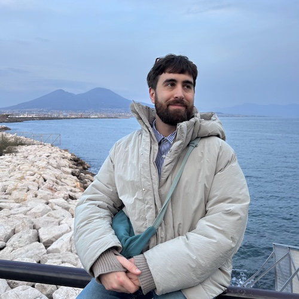

Francesco Ferraro

PhD candidate
Laboratory of Interdisciplinary Physics
National Biodiversity Future Center
University of Padova
Italy
About
I am a researcher in Theoretical Physics and Ecology.
These two fields may seem to have little in common, but it turns out that many ecological systems display some universal properties which can be explained using ideas and tools from theoretical physics, specifically statistical physics.
In my research I try to understand how these regularities emerge, and how they can be exploited in the monitoring and control of ecosystems.
At present, I'm a PhD candidate at the University of Padova and at the National Biodiversity Future Center, under the supervision of Sandro Azaele, Amos Maritan and Samir Suweis.
During my PhD I briefly visited Harvard University and MIT.
Previously I was a researcher at Ecole Normale Supérieure in Paris in the group of David Holcman.
For some time I was also an engineer at Femtorays Technologies.
I obtained my master's degree in theoretical physics jointly at SISSA and the University of Trento, and my bachelor's degree in physics at the University of Padova.
Links
Google Scholar
•
Twitter/X
•
Linkedin
Publications
-
Exact solution of Dynamical Mean-Field Theory for a linear system with annealed disorder
Francesco Ferraro, Christian Grilletta, Amos Maritan, Samir Suweis, Sandro Azaele
arXiv
(2024)
-
Generalized Lotka-Volterra Systems with Time-Correlated Stochastic Interactions
Samir Suweis, Francesco Ferraro, Christian Grilletta, Sandro Azaele, Amos Maritan
arXiv
(2023)
-
Opto-electronic device for the detection of substances dispersed in a fluid
Niccolò Ardoino, Francesco Ferraro, Carlo Guardiani, Mattia Mancinelli, Lorenzo Pavesi
Google Patents
(2023)
-
Nonequilibrium relaxation of a trapped particle in a near-critical Gaussian field
Davide Venturelli, Francesco Ferraro, Andrea Gambassi
Physical Review E
•
arXiv
(2023)
-
Dynamical behaviour of Brownian particles coupled to a critical Gaussian field
Master's thesis
SISSA, University of Trento
(2021)
-
Linking number and Gauss's integral for piecewise linear curves
Bachelor's thesis (Italian)
University of Padova
(2018)
Talks
-
Advances in the modeling of ecological communities: a theoretical physics approach
Biodiversity PhD Day, Padova, Italy
slides (June 2024)
-
Extensions of Dynamical Mean-Field Theory and applications
Stochastic Models and Experiments in Ecology and Biology, L'Aquila, Italy
slides (May 2024)
-
Dynamical Mean-Field Theory on random networks
Journal club, Padova, Italy
slides (May 2024)
-
Generalized Lotka-Volterra equations with stochastic disorder
Conference on Complex Systems, Napoli, Italy
slides (October 2023)
-
Dynamical behaviour of Brownian particles coupled to a critical field
LIPh Winter Workshop, Asiago, Italy
slides (February 2023)
(last updated in June 2024)